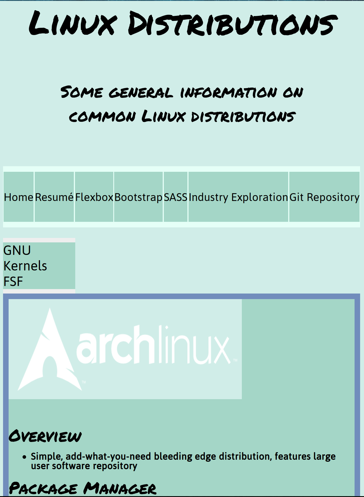
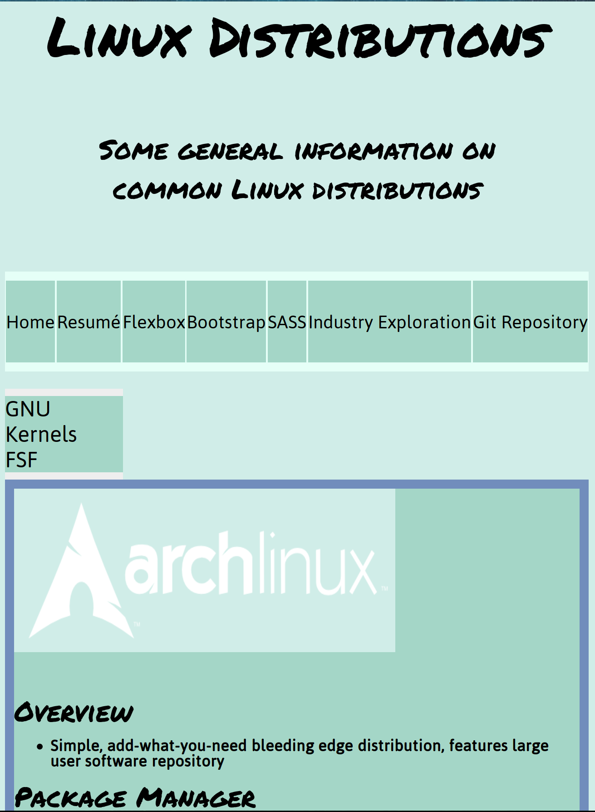

Overview
- My first impressions about Git were that this is yet another cool terminal tool I can use. I mainly work in the terminal for the speed aspect, and enjoy entering commands as opposed to clicking around a screen in a graphical interface. Even though I am very familiar with the terminal, Git did intimidate me at first since I had to link my GitHub account to it. That was the hardest part because for some reason, even after a fresh install of Git, all of my pushes simply were under my old GitHub account and not the current one I use now. I figured that out though. Learning Git was great because this summer at WSFS Bank where I will be interning, they use GitLab which is the same concept. I will definitely use what I learned this semester, this summer about version control.
Screenshots:
 


- These images are great to have as a reference in case something happens to your website, you can visually render somewhat what you had lost. They are also significant because it is good to see that progress being made on your project as a whole.